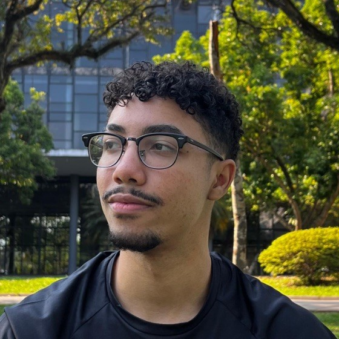

Sobre Mim
Olá! Meu nome é Wesley Belarmino, tenho 23 anos e sou estudante de tecnologia. Sou uma pessoa curiosa por natureza, com paixão por aprender não apenas na área de exatas, mas também nos idiomas, nos esportes e no autoconhecimento.
Desde criança, sempre estive em movimento: pratiquei vôlei, basquete, futebol e skate. Hoje em dia, continuo ativo na academia, treino calistenia, faço acrobacias e também me dedico às artes marciais, algo que sempre admirei. Já pratiquei karatê e capoeira na infância, e na adolescência me aprofundei em boxe e krav magá por conta própria. Atualmente, pratico taekwondo com frequência e disciplina.
Além do corpo, também alimento a mente e o espírito. Tenho um gosto forte por música aprendi a tocar violão e bateria ainda jovem e sou bem eclético nos estilos. Também me interesso muito por temas mais profundos como filosofia, psicologia e autoconhecimento. Gosto de refletir, crescer e sempre buscar me tornar uma pessoa melhor.
Resumindo: sou movido pela vontade de aprender em diversas áreas e de evoluir constantemente tanto como profissional, quanto como ser humano.